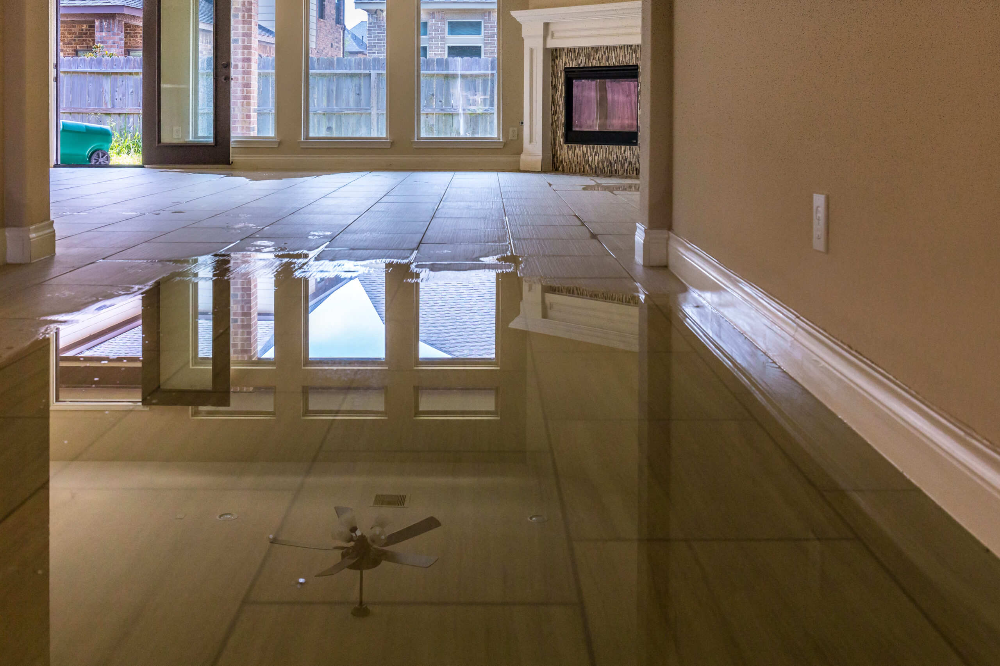

5 Essential Steps to Take After Water Damage in Your Home
Water damage can feel overwhelming, but acting quickly can minimize the impact and save you from further headaches. Whether it’s a burst pipe, a flood, or a leaking roof, knowing what to do immediately after water damage is crucial. At S.W.A.T. Restoration, we’re here to guide you through the process step by step.
- Ensure Safety First Before anything else, make sure your home is safe to enter. Turn off the electricity if water levels are high, and avoid any areas that seem structurally unstable. If in doubt, call a professional for an assessment.
- Stop the Water Source Identify and stop the source of the water if it’s safe to do so. This could mean shutting off your main water valve or fixing a broken appliance. Quick action can prevent further damage.
- Document the Damage Take photos and videos of the affected areas before starting any cleanup. This documentation will be invaluable when filing an insurance claim.
- Begin Water Removal and Drying Start removing standing water as soon as possible to prevent mold growth and further structural damage. Use buckets, towels, or a wet/dry vacuum, and open windows to improve ventilation.
- Call the Professionals For thorough water damage restoration, call a trusted professional like S.W.A.T. Restoration. We use advanced equipment to remove water, dry your home, and ensure there’s no lingering moisture that could cause future problems.
Water damage is stressful, but with the right steps, you can protect your home and start the restoration process with confidence. If you’re facing water damage, don’t hesitate to contact S.W.A.T. Restoration for expert assistance.